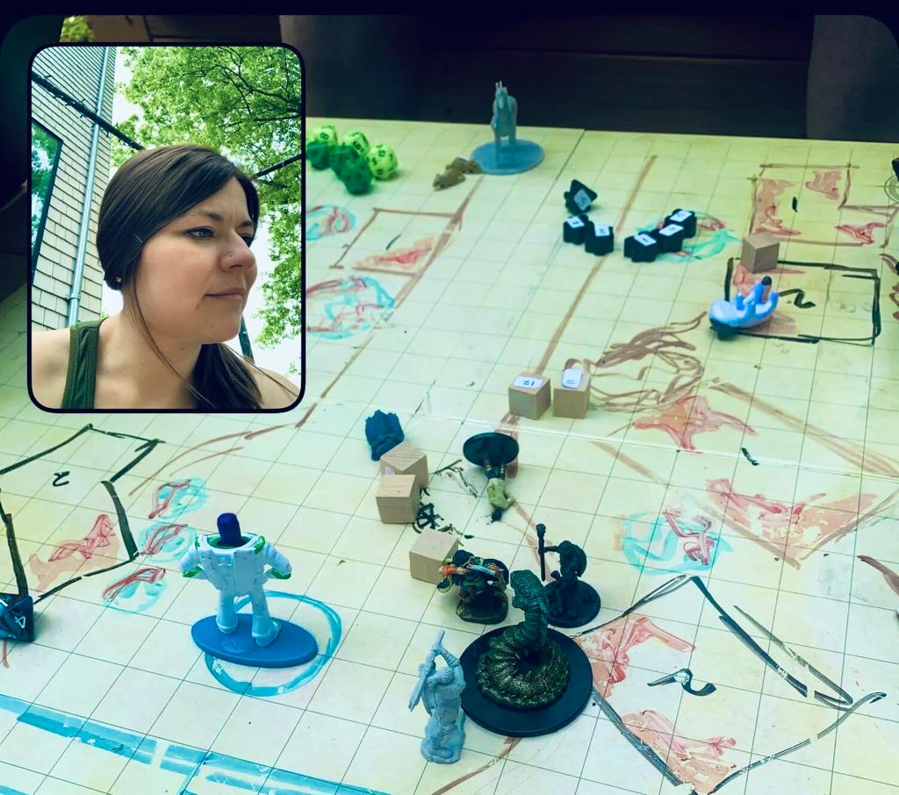

I like to combine my skills as a teacher, performer, and project manager into crafting immersive Dungeons & Dragons experiences for diverse groups of players. I've DM'd for a traditional high fantasy group at my CrossFit gym (levels 1-13!), a group of newbie friends in a low-combat/high-creativity home game, an online-only crew, and various one-shots. In my previous work I engaged students with lesson plans chock full of opportunities for belonging and collaboration; now I get to bring my storytelling abilities, sense of humor, and understanding of diverse needs to the table. I love tailoring adventures to each group's unique interests, backgrounds, identities, and even attention spans, and transporting my players into worlds where our imaginations and relationships can flourish. (Photo from BeReal on an excellent Sunday in Avernus)
I also love connecting with my friends and picking up new skills both out and about and at home. You can find me:
I also have two delightful kitties, Nacho and Yuki. They were rescued from the same cat-hoarder shed situation, where they had bonded, then languished at the shelter for almost two years before I had the great fortune of scooping them up. They find a new snuggling configuration several times a day (when they're not wrestling or begging for dinner).